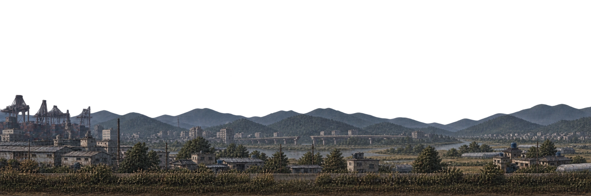

연결 초안 01 · 게임 미적용
멈춰도, 같은 풍경
부산에서 양산을 지나 밀양까지.
양산에 도착한 자리에서 다음 길이 시작됩니다.


40초 주행 → 양산에서 10초 정차 → 40초 주행 → 도착.
다른 위치를 고른 뒤 ‘전체 재생’을 누르면 처음부터 시작합니다.
기기의 모션 감소 설정을 따라 자동 이동을 끕니다. 위치 버튼으로 연결을 확인하세요.
무엇이 달라졌나요?
양산을 구간마다 다시 그리지 않습니다. 하나의 풍경에서 동일한 좌표를 공유하므로 도착·정차·다음 출발 사이에 산, 건물, 도로가 바뀌지 않습니다. 돌아오는 길에도 지형은 좌우 반전하지 않습니다.
원경은 천천히, 도로는 더 빠르게 움직입니다. 정차할 때 둘 다 점차 멈추고, 출발할 때 다시 속도가 붙습니다. 이 초안은 실제 게임 시간·이동 거리와 분리된 100초 예시입니다.
새 지형 후보 한 장에 두 길을 함께 담았습니다. 기존 도시 정본을 교체한 것은 아닙니다. 현재 기본 차량만 표시하며 동료·개조·사건 정차·저장 복원은 실제 게임 연결 때 별도로 검증합니다.